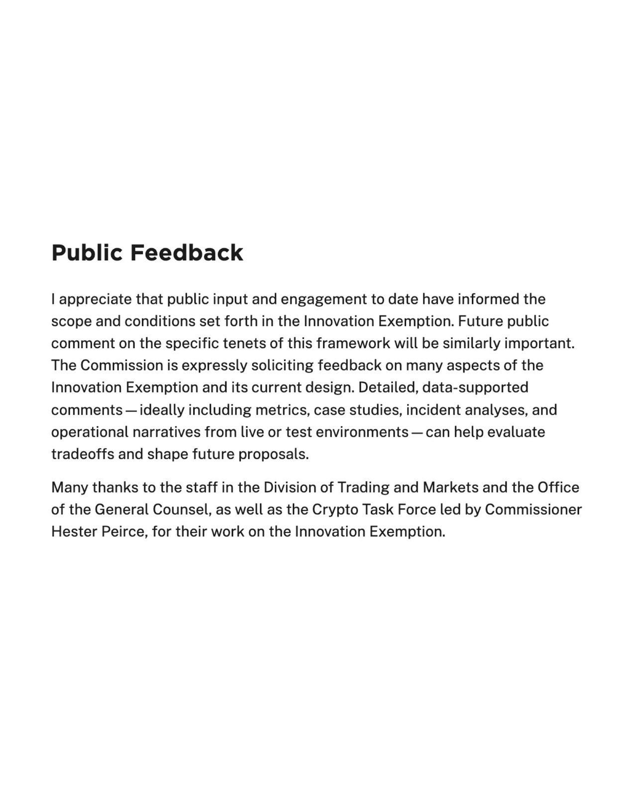
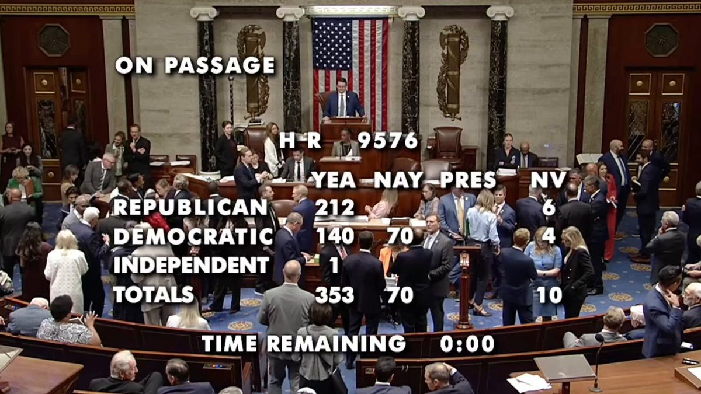
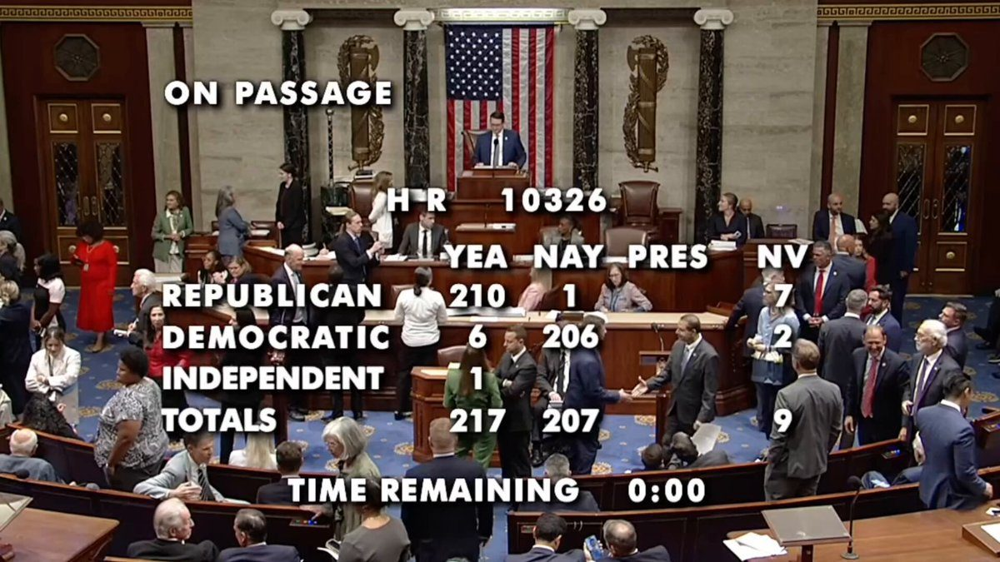
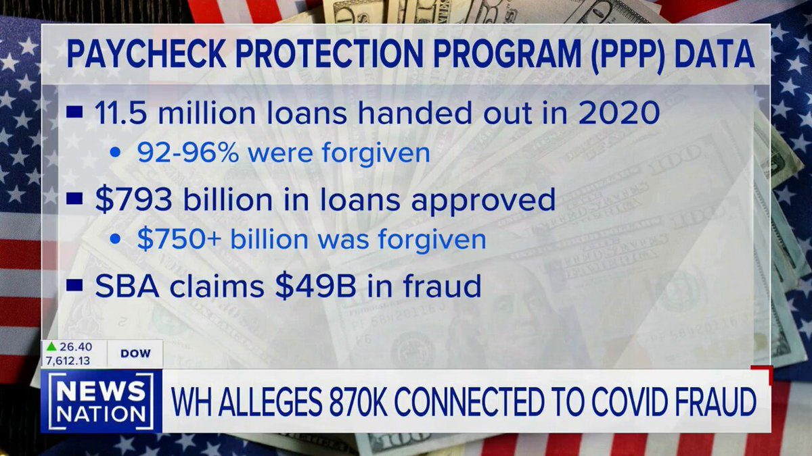
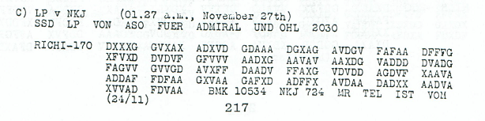
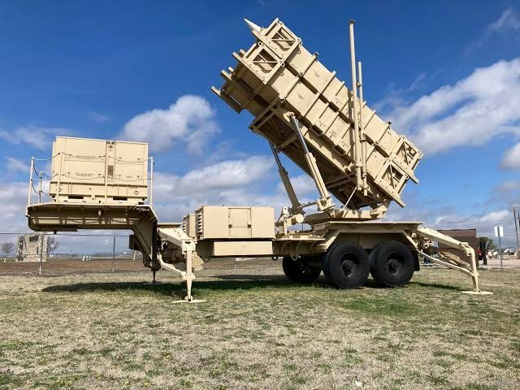
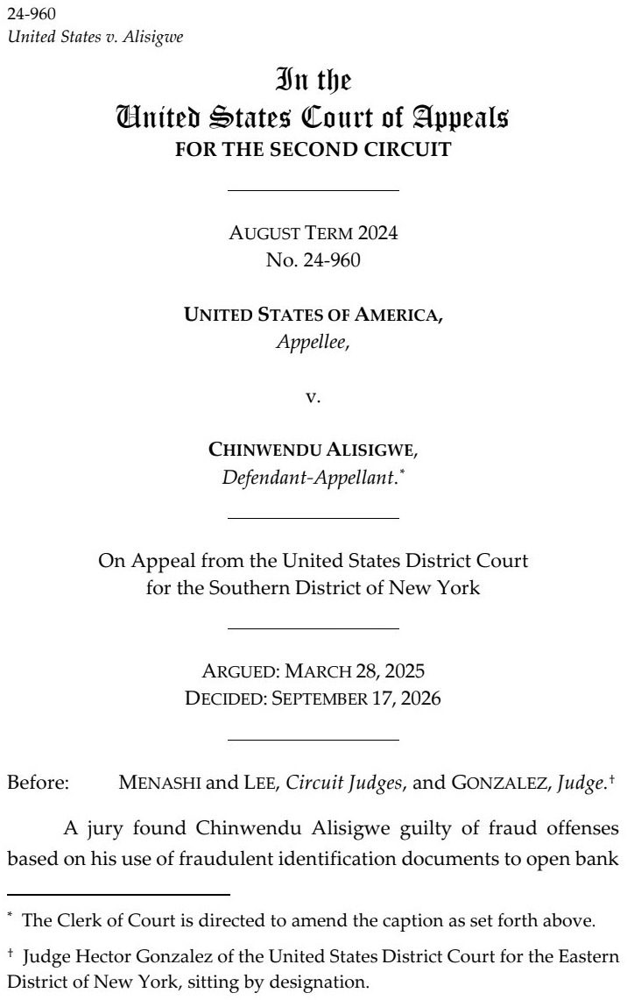

🚨 TODAY: The SEC issued an order granting temporary, conditional exemptive relief to Tokenized Securities Venues from the definition of “exchange” in the Exchange Act to trade tokenized NMS stock using innovative permissioned automated market makers and liquidity pools.
The ARC token has been minted.
Circle is the first publicly traded company to mint a network token for a new blockchain.
This is a technical milestone in the Arc roadmap as the network explores a future transition from Proof of Authority toward Proof of Stake.
The minting of ARC does not represent any commitment to a public launch of the token.
ARC is not live, tradeable, available for public use, or active for staking, governance, fees, or utility. The Arc network remains Proof of Authority today. Future ARC functionality and activation remain subject to change.
Official ARC contract:
🚨 JUST IN: Yen stablecoin issuer JPYC halts Ethereum and Polygon issuance reservations after a glitch, while investigating the cause.
JUST IN: 🇺🇸 SEC approves temporary, conditional exemption to allow limited trading of tokenized stocks on-chain.
READ: Commissioner Mark Uyeda' Statement on the SEC's "Innovation Exemption" ⬇️

Today, we are taking a significant step forward, within our statutory authority, to bring America’s capital markets into the digital age by facilitating onchain trading of certain tokenized stocks through the "Innovation Exemption." 🇺🇸
.@CFTC Staff Issues No-Action Position to Providers of Passive Software:
🚨 BREAKING: The US House has OVERWHELMINGLY voted to CODIFY President Trump's FRAUD DIVISION within the DOJ, 352-72
This is a HUGE win 🔥
The Fraud Division will soon have FULL STATUTORY AUTHORITY to investigate and prosecute fraud against: • Federal government programs • Federally funded benefits • Taxpayer dollars more broadly
It now heads to the US Senate
Absolutely MINDBOGGLING that ANYBODY could vote against this. But it's just Democrats being Democrats, I guess.

▶ Watch on X🚨 BREAKING: The US House has just PASSED a bill that FORCES states -- including Minnesota and California -- to hand over ANY AND ALL information demanded by the Attorney General to investigate FRAUD against federal programs
Medicaid, SNAP, TANF, unemployment insurance, various COVID-era funds, broadband grants, disaster assistance, and more are ALL included.
Newsom is NOT going to be happy 🤣
Expose it ALL, @AGToddBlanche! 🔥

▶ Watch on X.@SBA_Kelly: "Whether we’re standing in Missouri or Los Angeles — you see this administration standing with the hard-working Americans who deserve to know that there is accountability for those fraudsters who ripped off the American people."

▶ Watch on XGPT-6 Astra deciphered a 1918 German radio transmission that, to my knowledge, has never been deciphered before.
The message below translates to:
"EIN ENGLISCHER KREUZER EINLIEG X SEWASTOPOL X S4STEN X EIN GESCHWADER DER X ALLIIERTEN FOLGT 26STEN X"
or, in English:
"AN ENGLISH CRUISER ARRIVED AT SEVASTOPOL ON THE ?4TH AN ALLIED SQUADRON FOLLOWS ON THE 26TH"
Astra even double-checked its work by determining that an English cruiser, HMS Canterbury, reported its arrival in Sevastopol on November 24, 1918 and the arrival of an allied squadron on November 26, 1918.
This message is one of the ~20 WWI German radio messages that appear as one of the entries in the list of top 50 unsolved ciphers (
A minor, but really cool result!

A fully and rapidly reusable rocket will fundamentally change how humanity accesses outer space. “The Holy Grail of Rocketry” continues the ongoing Starship series with a look back at the scrappy days of SpaceX engineers proving reuse was possible and takes you onboard a high-seas race to recover a floating Starship
▶ Watch on XSwiss Re, one of the world’s leading reinsurers, found that Waymo's autonomous vehicles generated 88% fewer property damage claims and 92% fewer bodily injury claims than human-driven vehicles.
JUST IN: U.S. launches a $215 million competition to develop the world’s first reliable quantum computer capable of solving major scientific problems.
Liability for Unregistered Foreign Agents: The Department of Justice would like to remind the public of federal laws that require individuals to register as foreign agents when they act in the United States at the direction or control of a foreign government or foreign principal, and that they will face civil and criminal liability if they fail to do so.
Lawful protest and independent advocacy are protected rights. But if a foreign government or foreign principal secretly directs, controls, funds, or coordinates your activity in the United States, federal disclosure laws may apply. May God Bless the United States of America.
Learn your obligations under FARA and 18 U.S.C. § 951:
A new species of cat has been discovered for the first time since 1923: the Tilcayo Tiger Cat.
A man in Bolivia mistook it for a weird looking, adorable little housecat, but it's actually just a new species.
Image credit: Paola Nogales-Ascarrunz
BREAKING: For the first time since the Iran war began, JPMorgan says it no longer has a baseline view on oil, writing "we simply don't know how to model the endgame," and that the assumption that the Middle East disruptions are temporary is "becoming increasingly difficult to sustain," per JPMorgan Global Research.
The bank says it had assumed there were economic red lines the Trump administration would be unwilling to cross, and that six months later "many of those lines have been crossed, yet the exit strategy is less clear, not more."
Chevron's CEO said this week the Great fuel crisis has officially arrived, as Trump officials continue to claim the disruption temporary.
Today, as part of Operation Economic Outcast, the Department of the Treasury’s Office of Foreign Assets Control (OFAC) designated key components of the Iranian regime’s digital assets-based sanctions evasion infrastructure. Targets include BitBank, a priority digital assets venture controlled by OFAC-designated Iranian financier Babak Zanjani; BitBank’s developer, Pishtaz Simorgh Electronic Trade Company; and three associates of Zanjani.
Today’s designations of Iranian digital asset infrastructure make perfectly clear that efforts to finance the Iranian regime using cryptocurrencies are not beyond OFAC’s reach. If you support the Iranian regime, the Department of the Treasury will sanction you.
EXCLUSIVE: TALARICO SUPER PAC CAUGHT PAYING VOTERS!
"We are paying people $25...a roundabout way of paying people for their votes."
Video obtained by Townhall catches Sky McAdams, organizing manager for Texas Majority PAC, on undercover video explaining the scheme to elect Talarico in November.
"You can't pay someone to vote for someone"
"If I was a Republican, I would be pissed."
In the video, McAdams says it’s called a “paid relational program,” which is operated by Relentless that uses software called Rally.
In a campaign finance report filed in July, Texas Majority PAC said it paid Relentless $500,000 for a “relational organizing program,” or about 20 percent of all its expenditures up to that point. At $25 per vote, that could be good for 20,000 ballots.
Details below 👇
UKRAINE destroyed ANOTHER Russian refinery. UKRAINE has targeted ALL of Russias refineries Zelenskyy’s regime is purposefully attacking refineries to hurt the entire western economy & push the globalist destruction of western nations. On purpose. And not a single politician, media outlet, or doomer has even mentioned it. None of the instant oil experts have mentioned it.
WSJ report: General Motors will begin producing parts for Patriot missiles as the U.S. confronts a critical shortage of munitions.

Fact Sheet: President Donald J. Trump Restores American Saltwater Angling and Recreation
JUST IN: America’s first new iron ore mine in nearly 50 years opens in Minnesota.
After capturing over 100 hours worth of exposures, I'm pleased to share my latest "Deep Field" image, containing THOUSANDS of galaxies and a brand-new supernova that just kicked off ~2 weeks ago!
Timelapse showing the supernova, prints, and more details in the thread 👇
NEW: The Second Circuit ruled that federal officers may manually search travelers’ cellphones at the border without a warrant, probable cause, reasonable suspicion, or any individualized suspicion, holding that such searches are “routine” border searches.

It is being rumored that both Xi of China and Ramaphosa of Africa suffered from ischemic stroke after visiting India on BRICS summit.
They are said to be in bad shape.
In a recent school year, 300 students in California were put on “gender support plans” without parental consent or knowledge. SIDELINING PARENTS IS NOT ONLY IMMORAL – IT IS ILLEGAL.
JUST IN: U.S. Space Force plans to add roughly 10,000 Guardians over the next 5 years as it expands combat and "space superiority missions."